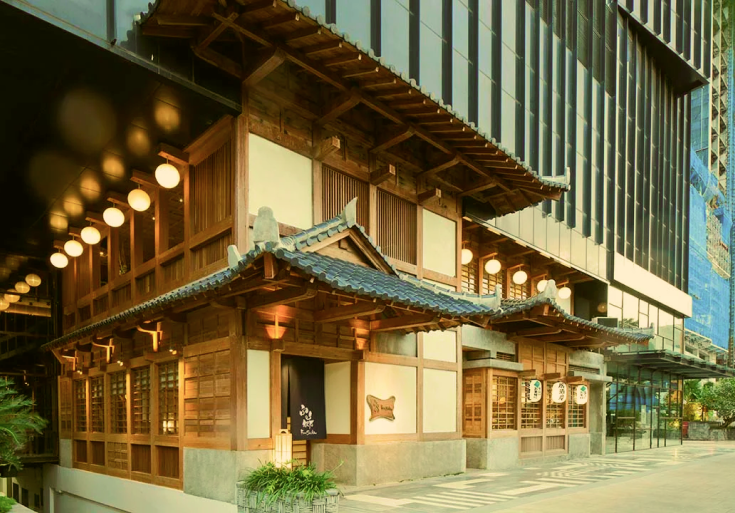
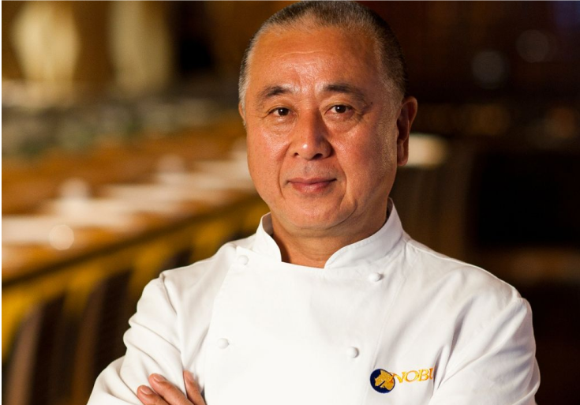
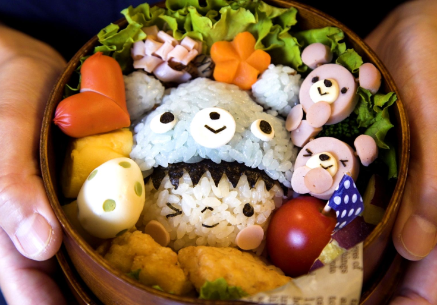

In 1997, building upon his outstanding achievements, Our Founder, "Nobu", expanded
his culinary empire by opening FUJI, a Japanese restaurant that paid
homage to the majestic Mount Fuji—a symbol of Japan's natural beaut
and cultural heritage. FUJI aimed to transport guests to the heart
of Japan, offering an exquisite dining experience characterized by
impeccable service, refined ambiance, and, above all, extraordinary
cuisine.
Today, FUJI stands as a testament to Nobu Matsuhisa's unwavering passion,
creativity, and dedication to his craft. The restaurant continues to be
celebrated as a bastion of Japanese culinary excellence, offering guests
an unforgettable experience filled with authentic flavors, impeccable
craftsmanship, and the spirit of Nobu's culinary legacy.

Nobuyuki "Nobu" Matsuhisa was born in Saitama, Japan. in 1949, Nobu developed
a deep passion for cooking at an early age. He trained rigorously in traditional
Japanese cuisine, honing his skills and acquiring a profound understanding of
the culinary arts.
In 1977, Nobu embarked on a journey to expand his knowledge and explore new culinary
territories. He arrived in Peru and began working at a small sushi bar in Lima.
It was here that he encountered the unique fusion of Japanese and Peruvian flavors,
also known as "Nikkei cuisine." This encounter would leave an indelible mark on Nobu's
culinary approach and inspire him to create innovative dishes that would captivate diners
around the world.

At FUJI, our mission is to immerse our guests in an extraordinary Japanese culinary experience that
transcends traditional boundaries. We strive to be more than just a restaurant; we aim to create
a cultural journey where every visit becomes a cherished memory.
We believe that food has the power to bring people together, fostering connections and building
bridges between cultures. At FUJI, we embrace diversity and strive to be a meeting place where people
from all walks of life can gather, share stories, and experience the warmth of Japanese hospitality.
In summary, our mission at FUJI is to serve as a culinary ambassador, introducing the world to the
captivating flavors and cultural heritage of Japan. We invite you to join us on this gastronomic
journey, where tradition and innovation converge to create a truly unforgettable dining experience.